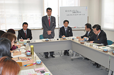

|
|
■議 題 I．「食品の安全・安心に関する当面の取り組み」について 前半、埼玉県食品安全局との今年度第2回食の安全・安心消費者懇談会をおこないました。  1．第2回食の安全・安心消費者懇談会 「食品安全に関する当面の課題について」 （1）農薬について （2）放射性物質検査について （3）BSE対策について （4）県衛生研究所移転について 2．各団体の取り組み、情報交換 各団体の情報交換として、生協ネットワーク協議会より第2回協議会（10/3）、第3回協議会（11/3，4）、第4回協議会（12/10）のこの間の取り組みについての報告、県生協連よりパルシステム埼玉での産直活動について、資料報告されました。 3．その他 II．報告事項 県食品安全局との懇談を終えた後、オンブズ会議で以下について報告、確認しました。 （1）第4回食の安全オンブズ会議報告（12/14） （2）埼玉県食の安心県民の集い報告（12/22） （3）「平成25年度埼玉県食品衛生監視指導計画」（案）作成にあたっての要望書 （4）全国消費者大会 食の分科会（1/26）「食の今を考える」報告
III．その他、資料・情報提供（資料報告） （1）埼玉県食の安全県民会議（2/6） （2）その他
|